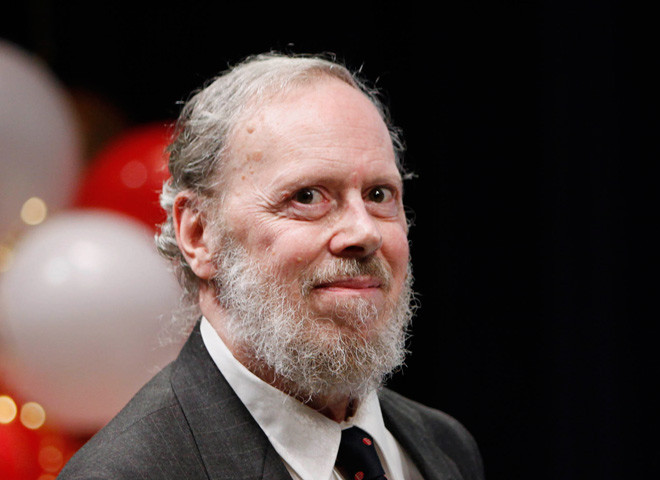

Dennis Ritchie

Dennis Ritchie - A reknowned Computer Scientist who invented Unix System. Also known as the Father of C
A Brief Timeline
- Sept 9, 1941 - Born in Bronxville, NY
- Jan 1, 1967 - Ritchie started working at Bell Labs in 1967. Here is where he worked on Multics operating system.
- May 1, 1968 - Ritchie earned his bachelor's degree in Physics in 1963, and completed his Doctorate degree in Mathematics in 1968 from Harvard University.
- Jan 1, 1969 - Bell Labs dropped the Multics operating systems project in 1969. This prompted Ritchie to develop C programming language and, with Thompson, create the UNIX operating system.
- Nov 3, 1971 - Unix was released on November 3rd, 1971, opening a operating system to work on a variety of platforms with highly adapted quality.
- Jan 1, 1972 - Ritchie and Thompson's operating system was not functioning on the more advanced PDP-11 mini computer in 1971. This prompted Ritchie to create C programming lanuage
- Jan 1, 1973 - Ritchie and Thompson wrote UNIX using C programming language. This allowed for UNIX to work a wide variety of computers in a range of large and minicomputers and advanced to simple computers.
- Jan 1, 1983 - Cowinner (with Ken Thompson) of the A.M. Turing Award. They recieved this award for, "their development of generic operating systems theory and specifically for the implementation of the UNIX operating system" (Hosch).
- Jan 1, 1988 - Ritchie was elected into the U.S National Academy of Engineering in 1988.
- Jan 1, 1990 - Ritchie was appointed the head of the System Software Research Department at Bell Labs in 1990.
- Jan 1, 1994 - Awarded the 1994 Computer Pioneer Award, "In recognition of contribution to the development of Unix" (Dennis).
- Jan 1, 1995 - In 1995 Ritchie (and his team) released Plan 9 operating system. Plan 9 attempted to integrate graphics and networking into a Unix platform. "They kept the Unix choice to mediate access to as many system services as possible through a single big file-hierarchy name space" (Plan 9).
- Apr 1, 1996 - Ritchie (with team members) released the inferno Operating System in April 1996.
- Apr 21, 1999 - Richie and Thompson are awarded the U.S. National Medal of Technology Award from President Bill Clinton for inventing UNIX and C programming language.
- Oct 12, 2011 - Died October 12th, 2011 in Berkeley Heights, NJ